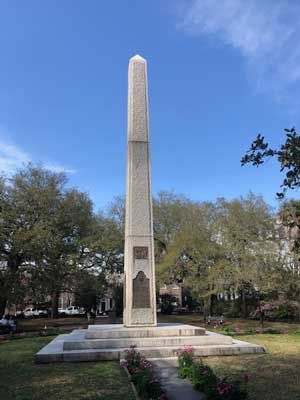

HIGHLIGHTS: Charleston is the largest city in the U.S. state of South Carolina. Charleston had an estimated population of 138,458 as of September 2020. Charleston was founded in 1670 as Charles Town, honoring King Charles II of England. Known for its strong tourism industry, in 2016 Travel + Leisure Magazine ranked Charleston as the best city in the world. The magazine has ranked Charleston the best city in the U.S. perpetually over the last few decades
Southeast > South Carolina > Charleston, SC

Angel Oak Tree
Visitors snap photos of the legendary Angel Oak Tree, which is over 60 ft. tall with a wide canopy

The Battery
Landmark defensive seawall & promenade, lined by stately antebellum homes & historical monuments.

Cathedral of Saint John the Baptist
Historic brownstone cathedral with vaulted stained glass windows, carved oak pews & marble altars
Fort Sumter
Site of the first shots fired in the Civil War, located in Charleston Harbor.

French Huguenot Church
Popular gardens with a Japanese teahouse & narrow paths winding past koi ponds, pagodas & a bridge.

Rainbow Row
Historic District cluster of 13 pastel-painted Georgian-style rowhouses dating from 1748 to 1845
St John's Lutheran Church
The "Mother Church of Lutheranism" in Charleston and in South Carolina, with a history spanning over 275 years, she is among the oldest of congregations of the Evangelical Lutheran Church in America
St. Philip's Church
State's oldest congregation (founded 1681) in 1838 church built of stuccoed brick with porticoes

Unitarian Church in Charleston
Gothic Revival church dating to 1787, featuring stained-glass windows & a fan-vaulted ceiling

Washington Square
Urban park with oak trees & flower displays centered on a 42-ft. model of the Washington Monument

Waterfront Park
Well-known park with water views plus a large lawn, walkways & 2 fountains

White Point Garden
Public garden beside the water offers paved paths, military statues, canons & picnic areas.

HIgher Ground for a Different Viewpoint
HIgher Ground for a Different Viewpoint


HIgher Ground for a Different Viewpoint